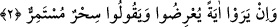

mûcizesi ile vaadinin doğruluğunu gösterdi. Böylece bütün varlıklar, kıyâmetin kopması
ile, bir çok garip ve hayret verici şeylerin açığa çıkması gibi büyük olayların Allah’ın
zât ve sıfatlarına delil bulunduğunu bileceklerdir.
et-Te’vilâtü’n-Necmiyye’de denilmiştir ki: “Kıyâmet ikidir. a) Büyük kıyâmettir, o da
bütün yaratılmışlara nisbetle umumî olan kıyâmettir ki, zamanı yaklaşmış olanıdır. b)
Küçük kıyâmettir, o da tabiî alâka ve ilişkilerin kesilmesi ve beşerî niteliklerin
kalkması ile Allah’a yürüyenlere nisbetle husûsî kıyâmettir. Maddî varlığın fânî,
hakkânî varlığın bâkî olması, ayrılıktan sonra birleşme olması, Rabbânî ahlâkın ve ilâhî
sıfatların tecellîsiyle Allah yolunda yürüyenlere nisbetle hususî olan bu küçük kıyâmet
her an gerçekleşmektedir.
Peygamberimiz (s.a.)’in “Ölen kimsenin, kıyâmeti kopmuştur”[147] hadis-i şerifi’nde
de buna işâret edilmektedir. Sâlikin nefsinin karanlığından, ruh âleminin güneşinin
kaplamasıyla kalb ayı yarılmıştır. Öyle olunca şüphe yok ki, ilâhî nur ile aydınlanmış
diri kalbe nisbetle kıyâmet kopmuştur. Haşre, öldükten sonra dirilmeye ve ölüme şâmil
olan bu husûsî kıyâmet gerçekleşmiştir. Öyle ise iyi anla, hayret etme ki, Allah Teâlâ
haklarında, “şimdi siz bu söze (Kur’ân’a) mı şaşıyorsunuz? Gülüyorsunuz da
ağlamıyorsunuz!” (en-Necm, 53/59-60) buyurduğu kimselerden olmayasın. Muvaffak
kılan ve yardım eden yalnız Allah’tır.
2. Onlar bir mûcize görürlerse hemen yüz çevirirler ve: “Eskiden beri devam
edegelen bir büyüdür,” derler.
“Onlar” Kureyşliler “bir mûcize görürlerse, hemen yüz çevirirler ve: “Eskiden
beri devam edegelen bir büyüdür” derler.” Allah’ın kudretine ve sevgili elçisinin
nübüvvetinin doğruluğuna delâlet eden, ay’ın yarılması ve benzerleri gibi alâmetlerden
bir alâmet ve mûcize gördüklerinde: “Eskiden beri devam edegelen bir büyüdür”
derler. Dâvâlarını ispatlamak için getirip gösterdikleri olağan üstü hâdiseye mu’cize adı
verilmesinin sebebi, benzerlerini halkın getirmekten âciz kalmalarındandır.
Hakikatine vâkıf olmak ve anlamak sûretiyle îman etmek için o mûcizeyi kabul etmek
istemezler. Muhammed (s.a.)’in getirdiği mûcizeleri, diğer sihir çeşitleri gibi getirip
gösterdiği bir olay telakkî ettiler. Onların bu sözleri, inşikâk-ı kamer mûcizesinden önce
de birbirine benzeyen mûcizeler gördüklerini gösterir. Dolaysıyla onların bu sözleri,
ayın yarılmasının gerçekleşmiş olduğunu pekiştirmektedir. Bazılarının dediği gibi,
kıyâmet koptuktan sonra ay yarılacaktır, anlamına değildir. Çünkü, eğer ayın yarılma
olayı daha önce görülmüş âyetler, alâmetler cinsinden olmasa idi, Kureyşlilerin bu
sözünü burada zikretmek uygun olmazdı. Bütün şahıslara ve beldelerine nisbetle ayı
yarılmış olarak görmeleri, o şeyin tekrarı sayılmazdı.